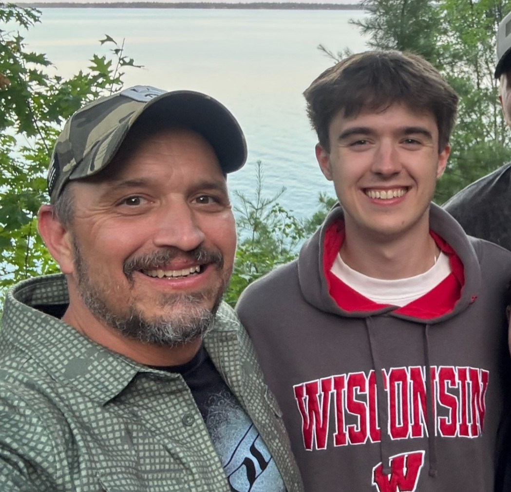

Dominic Bieniek
I'm Dominic, a senior at UW-Madison. I enjoy sports (Brewers, Packers, Bucks), music, hiking, cooking, and video games. I am taking LIS 500 to fulfill my last requirements for graduation, as well as to gain a grasp on inclusive design elements.